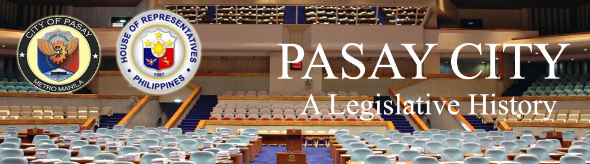

| History |
| Legislators |
| Laws |
| About |
 |
PASAY CITY
The following text/information are lifted from the book of Lee W. Vance entitled Tracing your Philippine Ancestors which was published in Provo, Utah by Stevenson’s Genealogical Center in 1980 and Symbols of the State by the Department of Interior and Local Government of the Republic of the Philippines in 1998.
Pasay City is bounded on the north of Manila, on the east by Makati, on the south by Parañaque, and on the west by Manila Bay.
Pasay City has a land area of 19 square kilometers. In 2007, it had a population of 403,064.
Following is a timeline1, 2 of events that led to the creation and development of Pasay City:
DATE |
EVENT |
|
Ancient settlements were already thriving in Paranaque, Pasig, Cainta and Taytay. These settlements were believed to be known to Chinese, Japanese and Indian traders. |
|
Juan de Salcedo visited Taytay and Cainta and brought these towns under Spanish sovereignty. |
|
Christian missions established parishes in Pasig (1572), San Mateo (1572), Parañaque (1575), Antipolo (1578), Makati (1578), Morong (1586), Taguig (1587), Pililla (1590), Baras (1595), Taytay (1595), Tanay (1606), Binangonan (1621), and Marikina (1630). |
|
A Chinese uprising caused great rioting throughout Rizal. The Chinese burned the churches of Taytay, San Mateo and Pasig. The Spaniards were able to quell the uprising but not without great loss of life and property. |
|
The town of Cainta was founded in 1689 while Marikina was founded the following year. |
|
British troops under the command of Captain Thomas Backhouse invaded Pasig, defeated the Spaniards and occupied Taytay and Cainta. |
|
The British withdrew from the islands. |
|
The town of Pateros was founded. |
|
“Distrito de los Montes de San Mateo” or District of the San Mateo Mountains was formed. Cainta, Taytay, Antipolo and Bosoboso were annexed to this new district from Tondo province. Angono, Binangonan, Cardona, Morong, Baras, Tanay, Pililla and Jalajala were annexed to the district from Laguna province. Morong was made the capital of the District. |
|
People of Pasay petitioned the Spanish administration for an independent status, with its own municipal government and a parish church. With the recommendation of the Manila Archbishop, Gregorio Meliton y Sta. Cruz, the petition was granted. |
|
Pasay was changed to Pineda, in honor of Cornelio Pineda, a Spaniard from Singalong, who assisted the inhabitants of Pasay in seeking protection from the colonial government against lawlessness, then rampant in the locality. |
|
The inhabitants of Pasay became an active member of the secret revolutionary government. |
|
American military forces controlled the district. |
|
Rizal province was created by fusing the former province of Manila, except the City of Manila, with the former district of Morong. Pasig was declared the provincial capital. |
|
A resolution restoring the name of the town from Pineda to Pasay was passed by the Municipal Council and endorsed by the Provincial Board. |
|
The resolution passed by the Municipal Council and the Provincial Board regarding change of name from Pineda to Pasay was affirmed by Act 227. |
|
Rizal’s various municipalities were combined as follows - Montalban with San Mateo; Taguig and Muntinglupa with Pateros; Malibay with Pasay; Las Pinas with Paranaque, Novaliches with Caloocan; Navotas with Malabon, San Felipe Neri (Mandaluyong) with San Juan del Monte, Cainta and Angono with Taytay; Bosoboso and Teresa with Antipolo, Binangonan, Baras and cardona with Morong; and Quisao and Jalajala with Pililla. |
|
The city is the site of the Ninoy Aquino International Airport and Philippine Air Force complex at Nichols Air Base. At Nichols Field, the two Spanish pilots, Gallarza and Loriga, landed after opening a new air route from Madrid to Manila. |
|
By virtue of REPUBLIC ACT (RA) 183, the municipality of Pasay was created into a city and renamed it Rizal. |
|
By virtue of RA 437, Pasay restored the original name. |
|
By virtue of Republic Act 1460, certain sections of the Pasay City Charter were amended. |
|
By virtue of Republic Act 1930, certain sections of the Pasay City Charter were amended. |
|
By virtue of Republic Act 2709, certain sections of the Pasay City Charter were amended. |
|
By virtue of Republic Act 3275, certain sections of the Pasay City Charter were amended. |
|
By virtue of RA 3827, the name of Dewey Boulevard, extending from the City of Manila, through the city of Pasay, to the municipality of Parañaque, province of Rizal, and any future extension thereof up to Cavite City, to president Roxas Boulevard was changed. |
|
By virtue of Republic Act 4827, certain sections of the Pasay City Charter were amended. |
|
By virtue of Republic Act 6088, certain sections of the Pasay City Charter were amended. |
|
Pasay City constitutes a lone district that includes Barangays Nos. 1-200. |
Sources:
1Vance, L. W. (1980). Tracing your Philippine ancestors. Provo, Utah: Stevenson's Genealogical Center.
2Velasco, C. R. and Untivero, R. G. (1998). Symbols of the State. Manila: National Media Production Center.

Congressional Library Bureau
Legislative Library Service